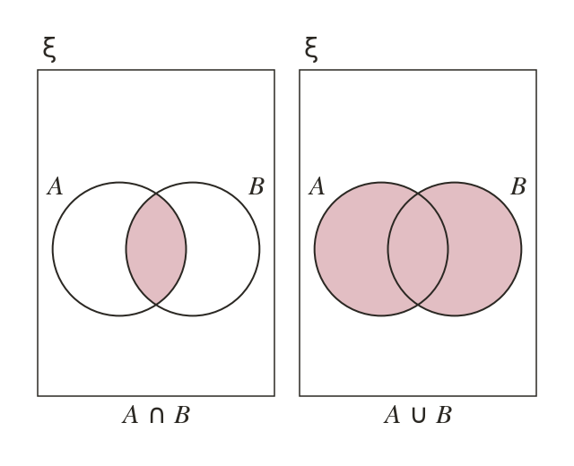

Reading an expression
Shade every element the expression describes. Work in brackets first, then ', then ∪ or ∩. ∩ shades only the overlap.
A shaded region shows every element the expression describes. Work inside brackets first, then apply ' (complement), then ∪ or ∩ to combine. ∩ means shade only where both circles overlap; ∪ means shade everywhere either circle covers.